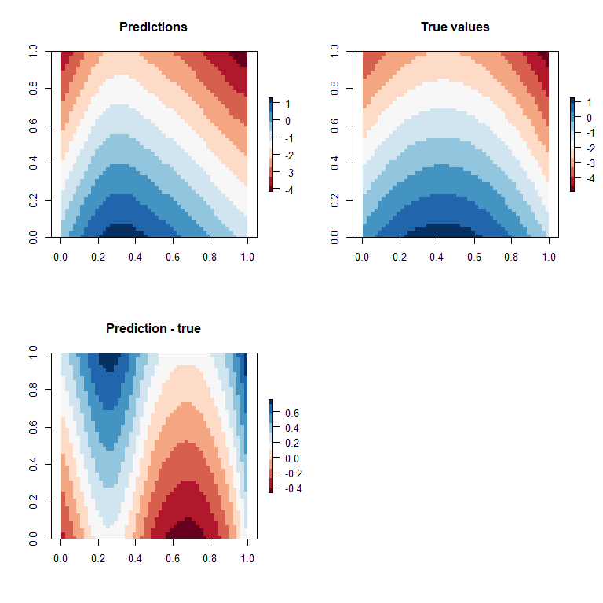

Spatial predictions with GAMs and rasters
One powerful use of GAMs is for interpolating to unsampled locations. We can combine GAMs with raster package to conveniently predict a GAM model to places we have not got data.
Simulate some spatial data
We’ll simulate some spatial data based on rasters. There are two spatial covariates, x1 and x2. We use these to simulate ‘true’ values of the response, based on linear and polynomial relationships with x2 and x1 respectively.
library(raster)
library(dplyr)
library(ggplot2)
library(patchwork)
rbase <- raster(extent(c(0,1,0,1)), nrow = 50, ncol = 50)
rx1 <- rx2 <- rbase
rx1[] <- xFromCell(rbase, 1:ncell(rbase))
rx2[] <- yFromCell(rbase, 1:ncell(rbase))
rtrue <- 6*rx1 - 7*rx1^2- 4*rx2
par(mfrow = c(2,2))
plot(rx1, col = RColorBrewer::brewer.pal(11, "RdBu"), main = "x1")
plot(rx2, col = RColorBrewer::brewer.pal(11, "RdBu"), main = "x2")
plot(rtrue, col = RColorBrewer::brewer.pal(11, "RdBu"), main = "True values")
Extract data at study sites
Here we create some random study site locations, then extract the values of the covariates from the raster at the study site locations.
set.seed(42)
site_means <- data.frame(x = runif(50), y = runif(50)) %>%
mutate(site = 1:50,
x1 = extract(rx1, cbind(x,y)),
x2 = extract(rx2, cbind(x,y)),
eta = extract(rtrue, cbind(x,y)),
z = rnorm(50, sd = 1),
yhat = eta + z)Now we will assume 3 transects at each site with a a group random effect (so transects at each site share a common deviation from the ‘true effect’). There is also individual transect level variation.
dat <- inner_join(site_means,
expand.grid(site = 1:50, transect = 1:3)) %>%
mutate(b = rnorm(150, mean = yhat, sd = 0.5))
## Joining, by = "site"
g1 <- ggplot(dat) +
aes(x = eta, y = b) +
geom_point()
g2 <- ggplot(dat) +
aes(x = yhat, y = b) +
geom_point()
g3 <- ggplot(site_means) +
aes(x = x, y = y, color = yhat) +
geom_point()
g3 | g1 /g2The plot shows site means (colours) for location, then the relationship between the ‘true’ values (eta) and the response (‘b’) and the site means (yhat) and the response.
Fit a GAM
Now we fit a GAM, with smoothers on covariates x1 and x2 and a random effect (bs = "re") for the sites.
library(visreg)
library(mgcv)
dat$sitef <- factor(dat$site)
m1 <- gam(b ~ s(x1) + s(x2) + s(sitef, bs = 're'),
data = dat)
visreg(m1)The GAM detects some non-linearity with x1 and a linear relationship with x2.
Check the summary:
summary(m1)
##
## Family: gaussian
## Link function: identity
##
## Formula:
## b ~ s(x1) + s(x2) + s(sitef, bs = "re")
##
## Parametric coefficients:
## Estimate Std. Error t value Pr(>|t|)
## (Intercept) -1.2716 0.1322 -9.619 4.83e-16 ***
## ---
## Signif. codes: 0 '***' 0.001 '**' 0.01 '*' 0.05 '.' 0.1 ' ' 1
##
## Approximate significance of smooth terms:
## edf Ref.df F p-value
## s(x1) 3.424 3.494 7.982 5.76e-05 ***
## s(x2) 1.000 1.000 49.915 1.01e-10 ***
## s(sitef) 40.718 47.000 9.500 < 2e-16 ***
## ---
## Signif. codes: 0 '***' 0.001 '**' 0.01 '*' 0.05 '.' 0.1 ' ' 1
##
## R-sq.(adj) = 0.901 Deviance explained = 93.1%
## GCV = 0.32768 Scale est. = 0.22688 n = 150The edf on s(x2) is exactly 1, confirming the GAM has just fit a linear relationship (correctly) for that covariate. The edf on s(x1) is 3.4, indicating it has probably overfit that covariate a little (for a 2nd order polynomial, we’d expect an edf of 2).
Don’t get too excited about the high deviance explained, because that calculation includes the deviance explained by the random effect smoother.
We can see how much variation ended up in the random effect with gam.vcomp (which counter to its name gives variance components as standard deviations):
gam.vcomp(m1)
## s(x1) s(x2) s(sitef)
## 1.335173e+01 1.685585e-04 8.934146e-01So the SD for sites was about 0.89, which is close to the true value of 1.
Predict everywhere
We can use our GAM to predict across the entire raster. We need to stack the rasters together and name each layer of the stack so that it corresponds to the covariate names in the call to gam().
One trick here is that we want to predict to the ‘average’ site, not to individual sites, so we need to take out the random site effect. We can do this by creating a raster of zeros and calling it ‘sitef’. Then the predictions will return values for the average site (given of course x1 and x2 values).
rzeros <- rbase
rzeros[] <- 0
rstack <- stack(rx1, rx2, rzeros)
names(rstack) <- c("x1", "x2", "sitef")
rpred <- predict(rstack, m1)
## Warning in predict.gam(model, blockvals, ...): factor levels 0 not in original
## fitThis returns a warning, but don’t worry, it was designed to work this way!
We used a raster stack to form predictions, so the predictions will come out as a raster, so we can just plot them as rasters:
par(mfrow = c(2,2))
plot(rpred, col = RColorBrewer::brewer.pal(11, "RdBu"), main = "Predictions")
plot(rtrue, col = RColorBrewer::brewer.pal(11, "RdBu"), main = "True values")
plot(rpred - rtrue, col = RColorBrewer::brewer.pal(11, "RdBu"),
main = "Prediction - true")
Overall our model has captured the main spatial gradients, but is tending to under-predict the region in the middle (in red) and southern portion of the space and slightly over-predict in the top corners.
Posterior predictions
This is just bonus content, because I find it interesting that you can get Bayesian posterior distributions from a fitted GAM.
This example is straight out of `?predict.gam. These will be conditional (not marginalized) on the site random effect.
newdat <- with(dat,
data.frame(x1 = seq(min(x1), max(x1),
by = 0.01),
x2 = mean(x2),
sitef = 0)) #again set sitef to zero
m1p <- predict(m1, newdata = newdat, type = "lpmatrix")
## Warning in predict.gam(m1, newdata = newdat, type = "lpmatrix"): factor levels 0
## not in original fitNow we have a predictions matrix, sample from it:
rmvn <- function(n,mu,sig) { ## MVN random deviates
L <- mroot(sig);m <- ncol(L);
t(mu + L%*%matrix(rnorm(m*n),m,n))
}
br <- rmvn(1000,coef(m1),m1$Vp)
m1post <- matrix(NA, nrow = nrow(newdat),
ncol = 1000)
for (i in 1:1000){
m1post[,i] <- m1p %*% br[i,]
}
CIdat <- t(apply(m1post, 1, quantile, probs = c(0.025, 0.5, 0.975))) %>%
data.frame(., newdat)
g1 <- ggplot(CIdat) +
aes(x = x1, y = X50.) +
geom_point() +
geom_ribbon(aes(ymin = X2.5., ymax = X97.5.),
color = NA, alpha = 0.5) +
ylab("Predictions") +
ggtitle("Predcitions with 95% C.I.")
g2 <- ggplot(data.frame(b = m1post[1,])) +
aes(x = b) +
geom_density(fill = "Purple") +
ggtitle("Posterior density at x = 0.01")
g1 / g2